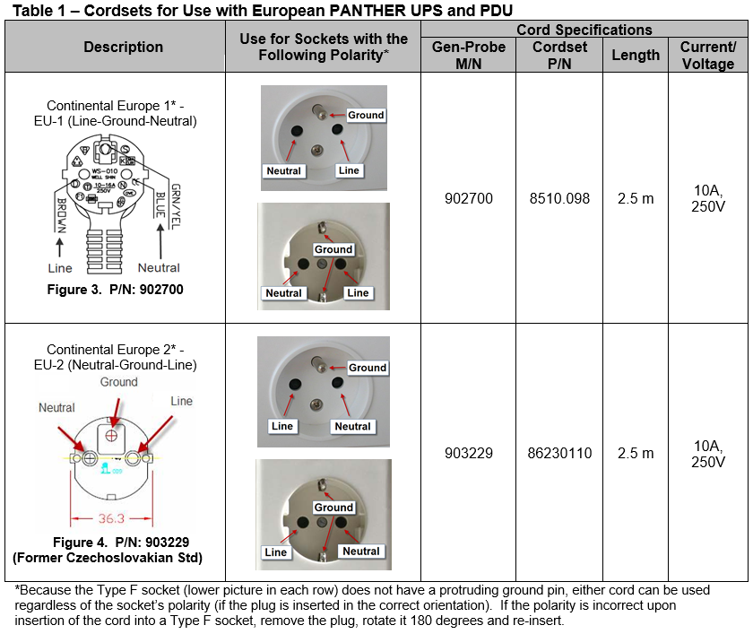
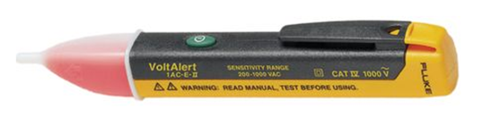

CEE 7/7 Power Cords for European Systems
What is Affected
There are no universal polarity standards for the Type E and Type F power sockets commonly used in Europe. Only the former Czechoslovakia had implemented a polarity standard for the Type E socket, requiring line (live) to be on the left side of the socket and neutral on the right (with the ground pin on top). Because of this, the orientation of the line and neutral slots on these types of sockets can vary from site to site.
The current Panther power cord released for use with these sockets, Gen-Probe P/N: 902700 (Supplier P/N: 8510.098) is configured with the line pin on the left and neutral pin on the right, when looking at the plug with the ground slot on top (see figure 3). The Panther UPS has an audible alarm which activates if plugged into a power socket with a polarity that does not match that of its power inlet. On the Type F (Schuko) sockets, this can be corrected by unplugging and rotating the plug 180 degrees, and then reinserting into the socket. However, the Type E (French) sockets will not allow the plug to be repositioned in this manner due to the presence of an off-centered, protruding ground pin (see figure 1). In these instances, a cord with the opposite polarity is required. Gen-Probe P/N: 903229 (Supplier P/N: 86230110) has been released, which has the opposite polarity of P/N: 902700 and follows the polarity standard set by the former Czechoslovakia (see figure 4).
The two power cords specified in this document can be used to connect the PANTHER uninterruptible power supply (UPS) or power distribution unit (PDU) to European Type E or Type F electrical sockets. Although both types sockets are found throughout Europe, Type E sockets (figure 1) are often used in (but not limited to) France, Belgium, Poland, Czech Republic, and Slovakia. Type F sockets are commonly found in (but not limited to) Germany, Austria, Finland, Greece, Hungary, Iceland, Luxembourg, the Netherlands, Norway, Portugal, Spain, Sweden, and some other Eastern European and Balkan countries.
Table1 lists the two approved power cords for use with the PANTHER UPS and PDU at sites using Type E or F electrical sockets. FSEs are responsible for determining and ordering the appropriate cord to use before systems installation or cord replacement.

Parts and Materials Required
- Non-contact Voltage Tester


Note—The Fluke VoltAlert non-contact voltage tester is used for the indication of hot (live/line) wires only. It does not measure voltage or current and does not require calibration.
Time Required
- 10 Minutes
Procedure
- Using a non-contact AC
 Alternating current voltage tester, determine the orientation of the line and neutral slots on the socket that the Panther UPS or PDU will be connected to:
Alternating current voltage tester, determine the orientation of the line and neutral slots on the socket that the Panther UPS or PDU will be connected to:- Turing the Tester On - Momentarily press the green button. Listen for a double beep to confirm activation. A continual Voltbeat flash visually indicates the Tester is active.
Note—Voltbeat is a self-test feature for visual confirmation of battery and system integrity, and power on. It provides a double-flash every two seconds during normal operation. - Checking for the Presence of AC Voltage - Insert the tip of the tester into a slot on the power socket. If the tester produces a steady glow at the tip of the tester, and if enabled, a continual beep, then the slot contains live AC Voltage. If no glow and continual beep (if enabled) is produced by the tester, then there is no AC voltage in the slot. Test the other slot to determine if it contains AC Voltage. The slot with AC voltage is the line (live) slot. The opposite slot should not contain AC Voltage and is the neutral slot.
- Turning the Tester Off - Press and hold the green button for more than half a second. Listen for a long half second beep to confirm deactivation of the Tester. The absence of the VoltBeat flash indicates the Tester is inactive.
Note— Disabling the Beeper- The beeper can be disabled by holding the green button down for more than two seconds during power up. The absence of the VoltBeat flash indicates the Tester is inactive. Note— Low Battery Indication- When the battery voltage drops below two volts, VoltBeat provides visual indication by stopping the Voltbeat flash. Replace with two AAA (LR3) batteries. - Turing the Tester On - Momentarily press the green button. Listen for a double beep to confirm activation. A continual Voltbeat flash visually indicates the Tester is active.
- Obtain the cord containing the plug with the line and neutral pin orientation that will match the line and neutral slots when plugged into the socker.
Note—When looking directly at the plug (pin towards you) with the ground slot at top, the orientation of the line and neutral pins will be opposite that of the line and neutral slots on the socket (when looking directly at the socket). When used for Type E sockets, ensure that the cord selected will contain line and neutral pins that will mate with the correct slots when it is plugged into the socket (see table 1 for reference). When used for Type F sockets, ensure that the cord’s plug is oriented correctly so that the pins will mate with the correct slots when plugged into the socket. - Use the cord to connect the UPS or PDU to the socket.
Note—When connecting the UPS to an electrical socket, an audible alarm will activate if the polarity is incorrect. Either unplug and rotate the plug 180 degrees and reinsert to correct the orientation (for Type F sockets only) or change to the cord with the opposite polarity. Note—PDUs will not alarm even if the polarity is incorrect, so ensure that the polarity of the cord matches that of the socket that it will be plugged into.
 button at the top of the page to send feedback, comments, or change requests.
button at the top of the page to send feedback, comments, or change requests.